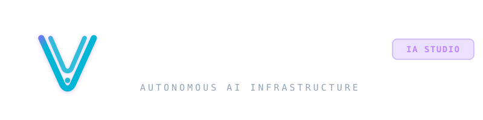

Documento Institucional
REF: VAL-CORP-2026 | VER. 1.0
Intelligent Operations & Enterprise Architecture
Arquitectura de Inteligencia Artificial, Agentes Autónomos y Automatización Empresarial.
Presentación institucional de capacidades técnicas, infraestructura operativa, protocolos de seguridad y metodología de despliegue para organizaciones con visión de largo plazo.
Entidad Emisora
Valentina AI S.A.P.I. de C.V.
Sede Operativa
Santiago de Querétaro, Qro.
Dominio Oficial
valentina-ai.mx